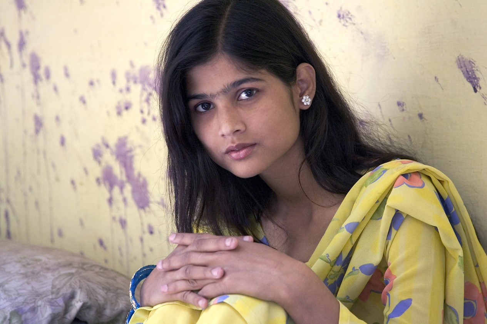

"If you educate a man, you educate an individual, but if you educate a woman, you educate a whole family."
According to the United Nations, "Girls’ education is both an intrinsic right and a critical lever to reaching other development objectives."
It empowers economically and socially marginalized individuals to lift themselves out of poverty and obtain the means to participate fully in their communities. For young women, education serves an indispensable role, both empowering them to protect themselves from exploitation and to make informed, efficient, and rational decisions. Educating young women thus not only positively impacts the individual, but also the nation as a whole by providing women the means and dignity with which they can be more effective participants in society.
Jawaharlal Nehru said it best when he claimed "If you educate a man, you educate an individual, but if you educate a woman, you educate a whole family. Women empowered means mother India empowered"
"Providing girls with an education helps break the cycle of poverty: educated women are less likely to marry early and against their will; less likely to die in childbirth; more likely to have healthy babies; and are more likely to send their children to school. When all children have access to a quality education rooted in human rights and gender equality, it creates a ripple effect of opportunity that influences generations to come."
Brightline Education aims to realize this empowerment by making a quality education available and accessible. Whether a girl is unable to attend school for fear of her safety, for fear of societal stigma, or simply because one just does not exist in her village, she should be given the opportunity to educate herself. Using tablet technology, pre-installed math, science and English lesson plans, and our dedicated on-the-ground education team, Brightline brings the teacher and classroom to the student&rsquos fingertips. With a strong focus on STEM subjects, our mission is to educate and empower these girls. Actively working with local villages, governments, and universities, we specifically target rural areas to reach even the most distant aspiring students.
Brightline Education aims to realize this empowerment by making a quality education available and accessible. Using tablet technology, pre-installed math, science and English lesson plans, and our dedicated on-the-ground education team, Brightline brings the teacher and classroom to the student‘s fingertips. Actively working with local civil society, government, and universities, we specifically target rural areas to reach even the most distant aspiring students.
